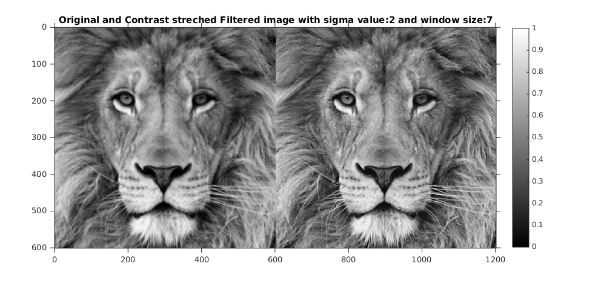
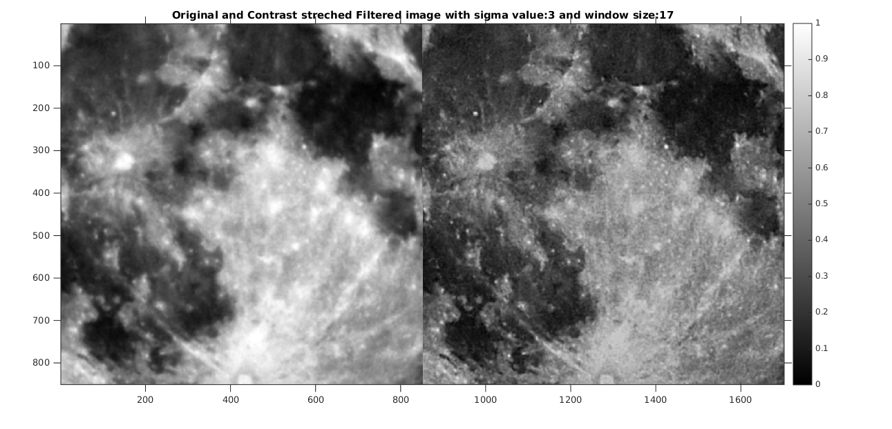

Contents
Image sharpening using Unsharp Masking
Applied on the picture to perform image sharpening using unsharp masking After performing the image sharpening input and output image has been contrast streched to the same intensity range.
tic;
Image LionCrop.mat
Both the input and output image has been shown side by side using same color map.
window_size = 7; %Value of window size Sigma_value = 2; %Value of sigma scaling_factor = 1; %Value of scaling factor
[output_arr, m, n] = myUnsharpMasking('lionCrop.mat', window_size, Sigma_value, scaling_factor);
The input and output image with the given parameters
figure imshow(output_arr), title(strcat('Original and Contrast streched Filtered image with sigma value: ', num2str(Sigma_value), ' and window size: ',num2str(window_size))), colorbar; axis([0 2*n 0 m]), axis on
Warning: Image is too big to fit on screen; displaying at 67%
Optimal tuned values
disp(strcat('window size parameter is: ', num2str(window_size))); disp(strcat('Gaussian standard-deviation parameter is: ', num2str(Sigma_value))); disp(strcat('scaling parameter is: ', num2str(scaling_factor))); toc;
window size parameter is:7 Gaussian standard-deviation parameter is:2 scaling parameter is:1 Elapsed time is 1.227180 seconds.
Image superMoonCrop.mat
Both the input and output image has been shown side by side using same color map.
tic; window_size = 17; %Value of window size Sigma_value = 3; %Value of sigma scaling_factor = 3; %Value of scaling factor
[output_arr, m, n] = myUnsharpMasking('superMoonCrop.mat', window_size, Sigma_value, scaling_factor);
The input and output image with the given parameters
figure imshow(output_arr), title(strcat('Original and Contrast streched Filtered image with sigma value: ', num2str(Sigma_value), ' and window size: ',num2str(window_size))), colorbar; axis([1 2*n 1 m]), axis on
Warning: Image is too big to fit on screen; displaying at 67%
Optimal tuned values
disp(strcat('window size parameter is: ', num2str(window_size))); disp(strcat('Gaussian standard-deviation parameter is: ', num2str(Sigma_value))); disp(strcat('scaling parameter is: ', num2str(scaling_factor))); toc;
window size parameter is:17 Gaussian standard-deviation parameter is:3 scaling parameter is:3 Elapsed time is 1.677900 seconds.